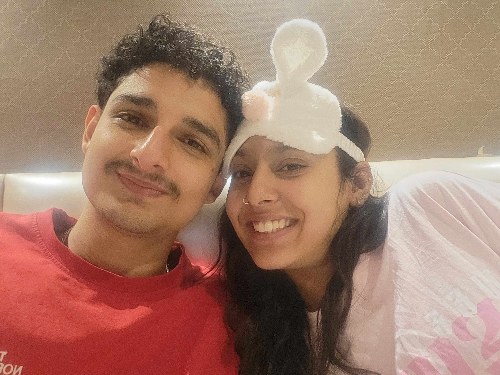
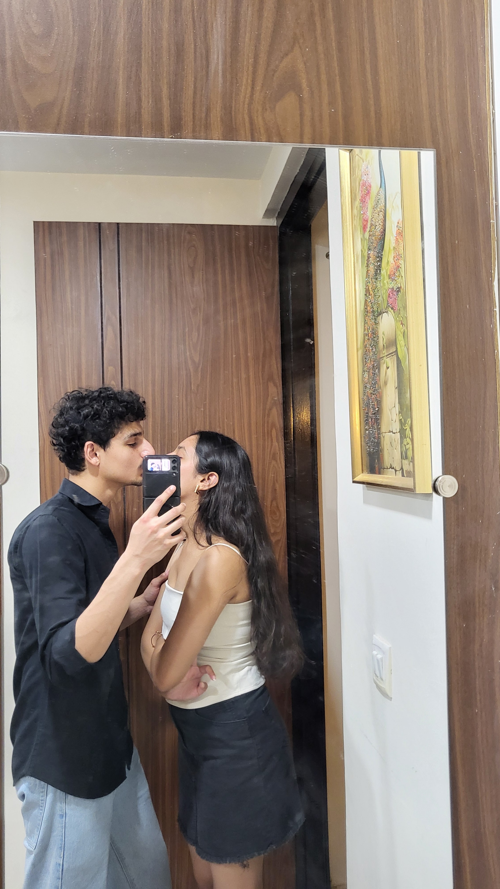
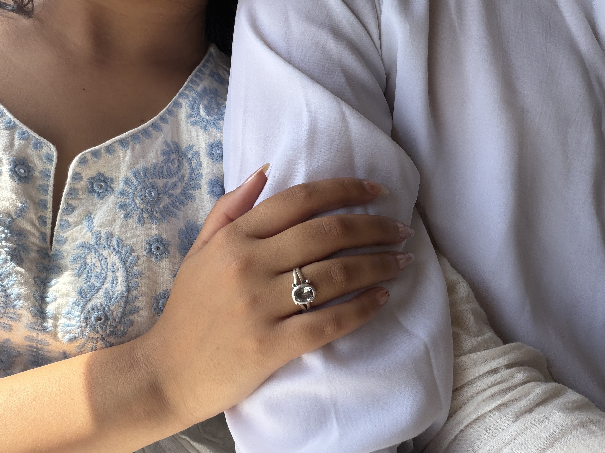

For the person I never wanted to hurt.
Trust is supposed to be the one thing that feels safe and solid inside a relationship. When I let words come out that questioned that foundation, I broke the comfort and security you deserve to feel with me.
I am not going to offer excuses. I am not going to blame circumstances, tiredness, or bad timing, and I will not try to justify it. I said it. It was wrong. And I take full, honest responsibility for it.
You asked for time and space, and I want to give that to you completely. I hear you, I respect what you need, and I am genuinely sorry for putting that pain between us.
Tap any card below. I wrote these because understanding you matters far more than just saying words.
Trust isn't something you ask someone to prove every time you feel uncertain. It is something you protect with consistency and faith.
Sometimes one sentence can hurt more than you intended it to. Good intentions never undo the impact of spoken words.
If you need space, I want to respect that completely instead of making you feel pressured to reply before you are ready.
I'm not going to promise that I'll magically never make a mistake again. I can promise to work on how I handle things and prove it through how I act.
Understanding you matters infinitely more than winning an argument or defending myself.
What we have built together is rare and precious. It deserves genuine patience, care, and continuous respect.
Not an arbitrary gallery, but a curation of the times that reminded me how beautiful our bond is.

Those hours where neither of us looked at a watch. We were simply present, sharing the kind of peace that only comes when you feel completely safe with someone.

Even when neither of us is saying a word, just being near you brings a peace I don't find anywhere else.

Your smile here is everything I hold dear. Honest, gentle, and filled with warmth.
Walking through normal days and discovering that with you, no day ever felt ordinary.
Every photograph here is a physical piece of our journey. Tap any photo to hold it in focus.
Photographs hold the frame; videos hold the breath and motion. Audio is muted by default so you remain in complete control.
A brief, unscripted second that a still photograph couldn't quite hold.
The ambient rhythm of where we were and how easy it felt to be together.
No posing, no rehearsing. Just being right there in real time.
A relationship isn't made in dramatic speeches. It lives in the small, unscripted realities that we built quietly together.
Talking about completely trivial things late at night and realizing that hearing your voice is the best part of my day.
The jokes that make no sense to anyone else in the world, but make both of us burst into laughter every single time.
Taking wrong turns, sitting in unexpected places, and finding that wherever you are is where I want to be.
The candid, blurry, imperfect pictures we snapped on a whim, which are now the most valuable memories I hold.
Not needing to put on a performance or be anyone other than who I am, knowing you offered that same safety in return.
I know I hurt you.
What I said was wrong, and I understand why it made you feel like there was doubt where there never should have been.
I don't want to explain it away, and I won't make excuses for how I acted. You deserved patience, understanding, and complete trust from me in that moment, and I failed to give you that.
I'm deeply sorry for putting that feeling between us.
I know an apology doesn't instantly undo what someone felt. And I know I have no right to ask you to stop being upset just because I'm sorry.
So I am not asking for that.
If you need time, please take it without hesitation. If you need space, I will respect it completely and quietly.
I just want you to know that I understand what I did, I am genuinely sorry from the bottom of my heart, and I want to show you through my actions—not just empty promises—that I can do better.
I love you, Siyu. And I am endlessly grateful for every memory we've made together.